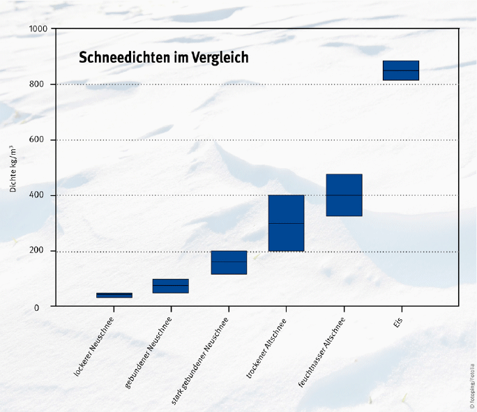
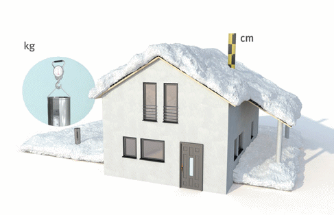
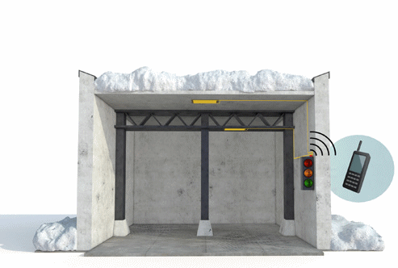
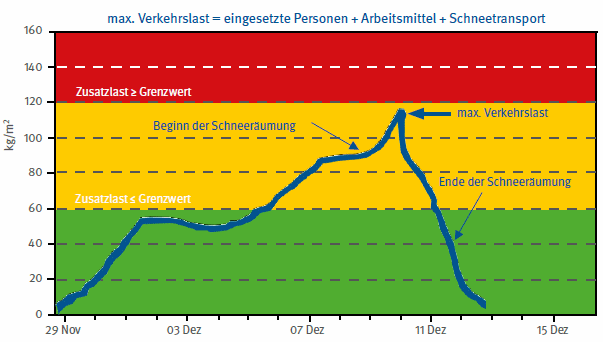

Ein zuverlässiges und effizientes Erfassen von Schneelasten sollte folgende Bedingungen erfüllen:
Die verschiedenen Schneearten unterscheiden sich wesentlich in deren Dichte (Abbildung 5). Deshalb ist die Schneehöhe alleine nicht ausreichend, um eine Entscheidung treffen zu können, wann eine Schneeräumung zu erfolgen hat. Vielmehr muss die Schneelast ermittelt werden.
Mit manuellen oder sensorbasierten Messverfahren kann die Schneelast direkt oder indirekt ermittelt werden (Abbildung 6).

Abb. 5 Dichte unterschiedlicher Schneearten
| Messung von Schneelasten auf Dächern | ||||||||||||||||||||||||||||||||
|
|
|||||||||||||||||||||||||||||||
Abb. 6 Ermittlungsmethoden für Schneelasten auf Flachdächern
Für die direkte, manuelle Ermittlung der Schneelast können Schneemessrohre verwendet werden. Dabei wird mit einem Rohr eine Schneemenge ausgestochen, gewogen und als Flächenlast umgerechnet.
Die Vorteile bei diesem Verfahren sind die geringen Investitionskosten und die Möglichkeit, beliebig viele Messpunkte auszuwählen. Nachteilig ist jedoch, dass zum Ausstechen der Schneemenge die Dachfläche und damit ggf. Gefahrbereiche betreten werden müssen. Außerdem bedeutet dieses Verfahren bei großflächigen Dächern einen beträchtlichen Aufwand.
Alternativ kann zur Messung der Schneehöhe die Pegelmessung verwendet werden. Die Schneehöhe wird an den installierten Pegeln abgelesen. Bei sinnvoller Anordnung der Pegel kann das Betreten der Dachfläche für den Ablesevorgang vermieden werden (Abbildung 7).
Die direkte, automatisierte Ermittlung der Schneelast erfolgt durch auf dem Dach installierte Schneewaagen. Damit erübrigt sich eine Dachbegehung und die Messergebnisse können rechnergestützt betrachtet und ausgewertet werden. Je nach Software können Alarmierungsprozeduren integriert sein, bei denen z. B. Informationen per E-Mail oder SMS an die Verantwortlichen abgesetzt werden. Nachteilig bei diesen Verfahren sind die punktuellen Messstationen mit den vergleichsweise hohen Kosten und dem hohen Wartungsaufwand. Das Dach und die Wände müssen in der Regel für die Stromzufuhr und die Datenleitung durchdrungen werden. Darüber hinaus besteht je nach Bauart der Schneewaage Vereisungsgefahr und es gilt zu beachten, dass bei großen Dachflächen unter Umständen keine repräsentativen Aussagen zur Schneebelastung möglich sind.

Abb. 7 Messung mittels Messrohr und Pegel
Bei der indirekten Ermittlung der Schneelast werden die Auswirkung der Schneelast auf das betreffende Bauteil (Tragwerk oder Dachschale) als auch alle anderen Lasten, wie z. B. die Verkehrslasten durch das Beräumungsteam und die eingesetzte Beräumungstechnik, gemessen. Damit können neben der Überwachung der Dachlasten auch Mängel in der Bauausführung bzw. altersbedingte Veränderungen identifiziert werden, die bei einer bloßen Sichtprüfung nicht oder nur mit hohem Aufwand nachweisbar sind. Ein Vergleich mit der Gebäudestatik wird möglich.
Die indirekten Messsysteme sind zu kalibrieren und funktionieren auf der Basis von Dehnmessstreifen, Lasermessungen oder Faser-Bragg-Gittern. Dehnmessstreifen stellen ein bewährtes Messverfahren mit einem guten Kosten/Nutzen-Verhältnis dar und sind wartungsarm.
Sie können an beliebigen Stellen ohne Dach- oder Wanddurchdringung montiert werden, bei einer hohen Genauigkeit, einer hohen zeitlichen Auflösung und der Möglichkeit, einer rechnergestützten Auswertung der Messergebnisse. Eine Dachbegehung entfällt. Nachteilig sind die mittleren Investitionskosten und der Aufwand für die Kalibrierung. Analog sind die Messungen mittels Sensoren auf der Basis von Faser-Bragg-Gittern zu bewerten. Die wesentlichen Unterschiede liegen in den sehr hohen Investitionskosten für Sensorik und Spektrometer und dem Aufwand für die Kalibrierung. Darüber hinaus ist hierbei die Einbeziehung eines Statikers sinnvoll.

Abb. 8 Messung mittels Dehnmessstreifen
Für eine repräsentative Überwachung der Schneelast durch manuelle Messungen werden je nach Hallenstruktur zwei Referenzmessstellen je 1.000 m² Dachfläche empfohlen. Diese Messstellen sollten so aufgeteilt werden, dass sie annähernd gleichmäßig verteilt sind. Darüber hinaus sind frei überwehte Teilflächen, besondere Akkumulationszonen an Höhensprüngen, Stellen mit Schneeverwehungen und Vereisungen zu berücksichtigen. Schneehöhe und -masse sollten nach jedem signifikanten Schneefall gemessen/ermittelt werden. Messdaten sollten über längere Perioden archiviert und ausgewertet werden, um objektive Aussagen über Belastungsschwerpunkte zu erhalten.
Bei der sensorbasierten Überwachung des Tragwerkes bzw. der Dachschale wird die direkte Auswirkung der Schneelast auf das jeweilige Bauteil gemessen. Die Dehnmessstreifen werden von unten an das zu überwachende Bauteil aufgeklebt und an die installierte Spannungsversorgung angeschlossen. Das Messsignal wird an einem Messverstärker eingespeist (Abbildung 8). Dieser Messverstärker kommuniziert mit der auf einem handelsüblichen PC installierten Monitoring-Software, welche die Messdaten visualisiert. Alarm- und Grenzwerte werden dort genauso konfiguriert wie auch Alarmierungsroutinen. Nach erfolgter Kalibrierung des Messsystems werden die Messwerte von Dehnungen in Flächenlasten umgerechnet und angezeigt.
Im unten abgebildeten Beispiel ist der kurzzeitige Anstieg der Verkehrslasten durch die Schneeräumungsteams und deren Technik während einer Räumung erkennbar (Abbildung 9).
Es ist sinnvoll, die ermittelten Schneelasten in ein Informationssystem einzubinden. Informationssysteme sollten effektiv mit den Entscheidungsebenen zur Auslösung von Maßnahmen gemäß dem Raumkonzept verknüpft werden und darüber hinaus aktuelle meteorologische Voraussagen berücksichtigen. Der Einsatz eines Informationssystems bietet folgende Vorteile:

Abb. 9 Beispiel für eine sensorbasierte Überwachung der Schneelast mittels Dehnmessstreifen auf einem Flachdach